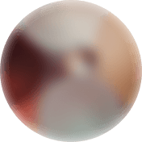
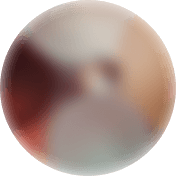
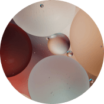
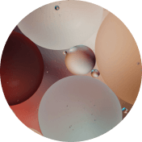

Elérhető online rendelés


Elérhető online rendelés
Mozgasd a csúszkát az eredmények megtekintéséhez:

Az O caps előtt
2 héttel később
3 héttel később
1 hónappal később


 



 



Kapszulák a jobb látásért
Megerősíti a szem izmait
Az O caps összetevői megerősítik a szemlencse irányításáért felelős sugárizmot, valamint megvédik a lencsét a túlzott megerőltetéstől.

Javítja a szem vérkeringését
A kapszulák megnövelik a szem artériáinak rugalmasságát, valamint aktiválják a retina és a szaruhártya vérkeringését.
Élesíti a látást
Az O caps kezelés befejezése után sokkal pontosabban fogod felismerni a színeket, jobban látod majd a tárgyak körvonalait és az apróbb betűket is el tudod olvasni. Szemeid nem fognak elfáradni a hosszú időn keresztüli számítógép előtti munka miatt.
A béta-karotin erős antioxidáns, amelynek fontos szerepe van a szem fotorecepciójában és a rodopszin vizuális pigment szintézisében. Védi a szaruhártyát. Csökkenti az életkorral összefüggő elváltozásokkal degeneratív folyamatok intenzitását és súlyosságát a szemben, valamint többek között enyhíti a zöldhályogot, szürkehályogot, belső vérzést is.
élesíti a látást;
erősíti a szemizmokat és az ereket;
megakadályozza a retina degeneratív elváltozásait;
csökkenti a látásvesztés kockázatát.
A E-vitamin, C-vitamin okozzák a retina védelmi funkcióját. Csökkentik a szem érzékenységét a képernyő villogására.
csökkentik a szem számítógépen végzett munka miatti fáradtságát;
védik a retinát az UV-sugárzástól;
javítják a látást a sötétben;
megakadályozzák a szürkehályog kialakulását.
Az cink erősíti a szem hajszálereit, megszünteti az irritációt és a gyulladást. Hidratáló hatású. Megszünteti az olyan kellemetlen tüneteket, mint a szárazság, bizsergés, gyulladás és a szemnyomás.
élesíti a látást és javítja a látástisztaságot;
segít újra jól látni a színeket, kis tárgyakat, valamint segíti a tárgyak körvonalainak jobb felismerését;
javítja a vérkeringést;
tápanyagot biztosít a sejteknek;
1 O Cap = 1 kg sárgarépa
"A gyengénlátás problémája azokat érinti, akik sokat olvasnak vagy dolgoznak számítógép előtt. A szemüveg és a kontaktlencse viselése csak tovább rontja a helyzetet, mivel ezek mellett szemünk elgyengül és feladja a segítség nélküli látást. A lézeres szemműtét nem túl jó lehetőség. Ha nem szabadulunk meg a gyengénlátás kialakulásának okától (számítógép, TV, okostelefonok), a műtét hatása mindössze 1-2 évig tart. Az béta-karotinnal O caps táplálékkiegészítő segítségével javíthatunk látásunkon. A kapszulák titka az összetevők megfelelő adagjában rejlik, pont annyi van belőlük, amennyivel a nagy megterheléstől függetlenül élesebben és tisztábban láthatunk."
— Lukács Antal, látásjavító szakértő

Egész életemben egy irodában dolgoztam. A látásom a 40. életévem betöltése után gyorsan romlani kezdett. El kellett kezdenem szemüveget viselni, ami nagyon kényelmetlen volt. A kontaktlencse viselés még ennél is rosszabb volt, a szemeim érzékenyek lettek és viszketni kezdtek. Ez azonban nem a legrosszabb az egészben, a legrosszabb az volt, hogy minél több ideig hordtam szemüveget vagy viseltem kontaktlencsét, annál rosszabb lett a látásom nélküle. A megvakulás elkerülése végett kezdtem el alkalmazni az O caps kapszulákat egy barátom ajánlásának köszönhetően. A látásom fokozatosan javult: pár héttel később a tárgyakat már nem homályosan láttam, egy hónap után pedig a mellettem lévő házon található tábla szövegét is el tudtam olvasni. Még mindig van szemüvegem, de ma már sokkal kisebb dioptriájút kell hordanom. 2-3 O caps kezelés múlva szinte biztos vagyok benne, hogy egyáltalán nem lesz szükségem rá.
— Marcell
Több mint 40 éve vagyok egyetemi tanár. Imádom a munkámat és nem akarok nyugdíjba menni, de a látásom évről évre egyre rosszabb, amiért könyvekből és számítógépeken dolgozom. Még szemüveggel sem tudom elolvasni az apróbb betűket. Azt hittem, búcsút kell intenem a tudománynak. Amikor megosztottam a problémám egy munkatársammal, az O caps kapszulák kipróbálását ajánlotta nekem. Egy héttel később már sokkal könnyebben tudtam olvasni a számítógépemen lévő betűket. A látásom fokozatosan javult, a teljes folyamat pedig egy hónapot vett igénybe. Ma már egy nagyon alacsony dioptriájú szemüveget kell viselnem, annak ellenére, hogy 67 éves vagyok!
— Eszter
Az orvosom mesélt nekem az O caps termékről, amikor lézeres szemműtétre mentem hozzá. A látásom annyira rossz volt, hogy még a szemüveg sem segített. Az orvosok lebeszéltek a műtétről. Azt mondták, az altatás veszélyes lenne a szívemre az én koromban – 52 éves vagyok. Az O caps szedését ajánlották, és azt mondták, ha nem segítene, erősebb gyógyszert is felírnak. Szerencsére nem volt rá szükségem. Ezek a kapszulák teljesen jól végezték a dolguk. Ma már csak olvasáskor vagy TV-nézéskor viselek szemüveget, de nincs rá szükségem a hétköznapokban.
— Mária